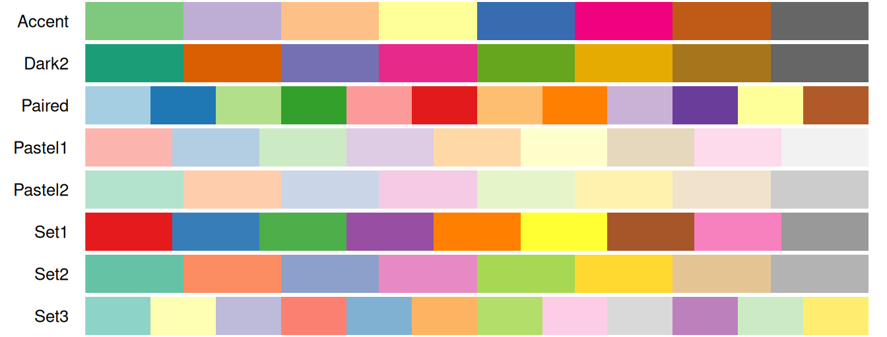
{scales} makes 155 color palettes available to packages like {ggplot2}, which references them using the palette argument of scale_*_discrete(), scale_*_continuous(), and scale_*_binned() functions.
This article groups every built-in name by the use it’s best suited for: as a discrete palette for unordered categories or as a continuous palette for magnitude data (sequential or diverging).
Palette names
Discrete: "Alphabet", "Classic Tableau", "Dark 2", "ggplot2", "Okabe-Ito", "Pastel 1", "Pastel 2", "Polychrome 36", "R3", "R4", "Set 1", "Set 2", "Set 3", "Tableau 10", "Accent", "Dark2", "Paired", "Pastel1", "Pastel2", "Set1", "Set2", "Set3", "Categorical.12", "hue", "Cold", "Dark 3", "Dynamic", "Harmonic", "Warm"
Sequential: "Blues", "BuGn", "BuPu", "GnBu", "Greens", "Greys", "Oranges", "OrRd", "PuBu", "PuBuGn", "PuRd", "Purples", "RdPu", "Reds", "YlGn", "YlGnBu", "YlOrBr", "YlOrRd", "LightBluetoDarkBlue.10", "LightBluetoDarkBlue.7", "SteppedSequential.5", "grey", "ag_GrnYl", "ag_Sunset", "Batlow", "Blue-Yellow", "Blues 2", "Blues 3", "BluGrn", "BluYl", "BrwnYl", "Burg", "BurgYl", "Dark Mint", "Emrld", "Grays", "Green-Yellow", "Greens 2", "Greens 3", "Hawaii", "Heat", "Heat 2", "Lajolla", "Light Grays", "Magenta", "Mint", "OrYel", "Oslo", "Peach", "PinkYl", "Purp", "Purple-Blue", "Purple-Orange", "Purple-Yellow", "Purples 2", "Purples 3", "PurpOr", "Red-Blue", "Red-Purple", "Red-Yellow", "RedOr", "Reds 2", "Reds 3", "Sunset", "SunsetDark", "Teal", "TealGrn", "Terrain", "Terrain 2", "Turku", "cividis", "inferno", "magma", "mako", "plasma", "rocket", "turbo", "viridis"
Diverging: "BrBG", "PiYG", "PRGn", "PuOr", "RdBu", "RdGy", "RdYlBu", "RdYlGn", "Spectral", "BluetoDarkOrange.12", "BluetoDarkOrange.18", "BluetoGray.8", "BluetoGreen.14", "BluetoOrange.10", "BluetoOrange.12", "BluetoOrange.8", "BluetoOrangeRed.14", "BrowntoBlue.10", "BrowntoBlue.12", "DarkRedtoBlue.12", "DarkRedtoBlue.18", "GreentoMagenta.16", "Berlin", "Blue-Red", "Blue-Red 2", "Blue-Red 3", "Blue-Yellow 2", "Blue-Yellow 3", "Broc", "Cork", "Cyan-Magenta", "Green-Brown", "Green-Orange", "Lisbon", "Purple-Brown", "Purple-Green", "Red-Green", "Tofino", "Tropic", "Vik"
Discrete palettes
Discrete palettes assign a distinct color to each category, e.g. scale_color_discrete(palette = "Set2"). These come from four sources: HCL’s qualitative palettes, base R’s fixed categorical sets, Brewer’s qualitative palettes, and one dichromat palette built specifically for categories (plus ggplot2’s own default, "hue"). Where a name is shared across sources, the last-registered palette name takes precedence; for instance, "Blues" exists in both the HCL and Brewer families, but {scales} only returns the Brewer version of "Blues".
Brewer’s qualitative palettes:
Base R’s fixed categorical sets (grDevices::palette.pals(), R >= 4.0.0 only), including familiar defaults like "R3" and "R4", alongside color-vision-deficiency-aware sets such as "Okabe-Ito":
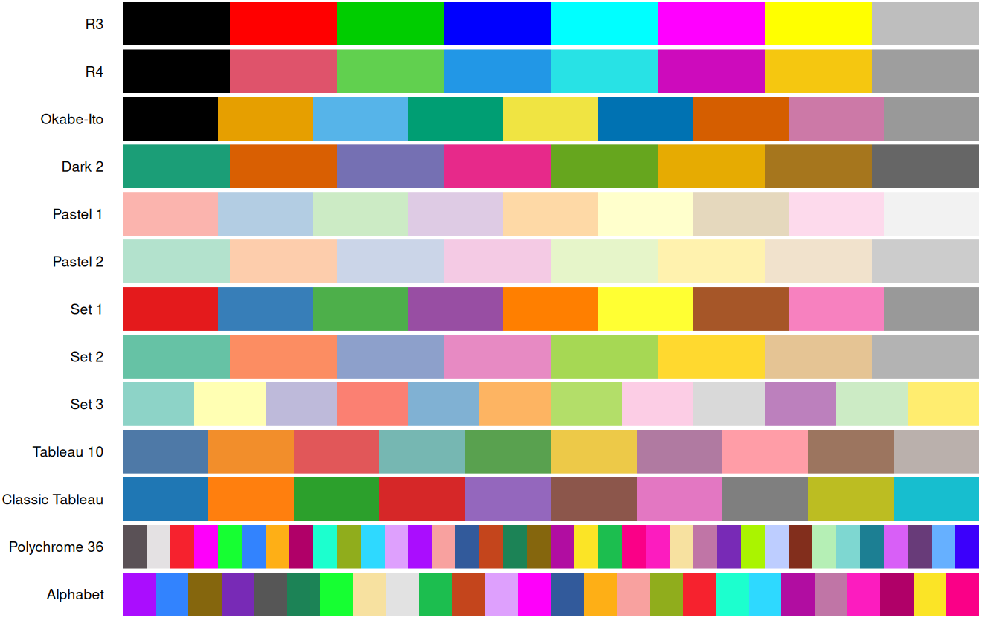
HCL’s qualitative palettes, generated from a continuous hue rotation rather than a fixed set of hand-picked colors (shown here at n = 8; requesting many more levels than that can produce hues that are difficult to distinguish):
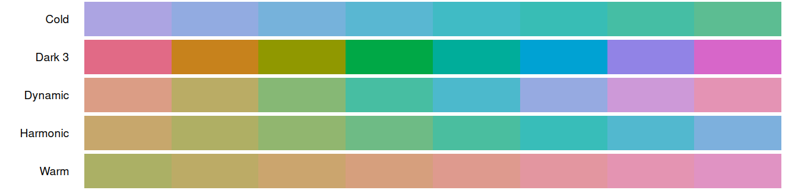
One more standalone discrete palette: ggplot2’s default "hue" palette:
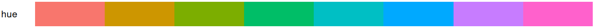
Dichromat’s single qualitative palette:
Many of these palettes have a fixed, limited number of colors. Requesting more colors than a palette contains will recycle values (for the fixed sets) or produce increasingly similar hues (for HCL’s qualitative palettes and for ggplot2’s "hue" palette), so these are best suited to categorical data with a known, modest number of levels.
Continuous palettes
Continuous palettes map a numeric range onto a smooth color gradient, e.g. scale_color_continuous(palette = "viridis"). These split naturally into two subtypes: sequential palettes for data that increases in magnitude from a natural minimum, and diverging palettes for data that departs from a meaningful midpoint (often zero). Sequential and diverging palettes can also be used with binned scales, which quantize the continuous palette into discrete steps.
Sequential
The viridis family: perceptually uniform, color-blind friendly gradients, and a strong general-purpose default:
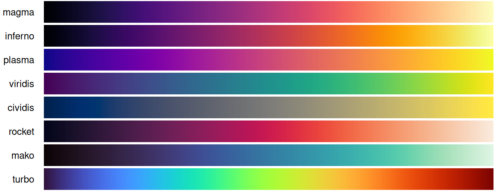
Brewer’s sequential palettes:
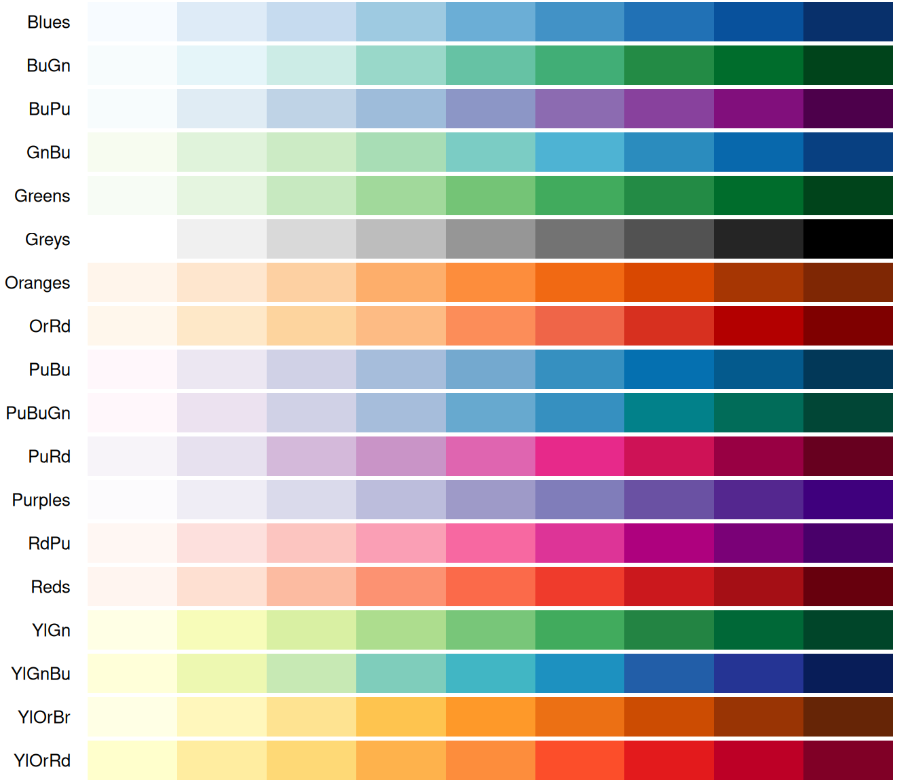
HCL’s sequential palettes — by far the largest family, including several scientific color maps ("Batlow", "Hawaii", "Turku", "Lajolla") alongside classics like "Heat" and "Terrain":
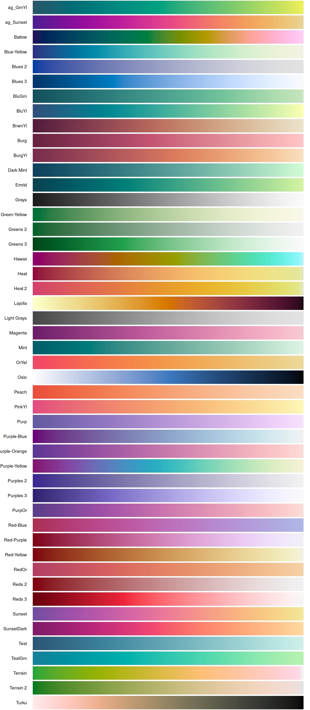
Dichromat’s two color-safe ramps and its unique stepped-sequential ramp:
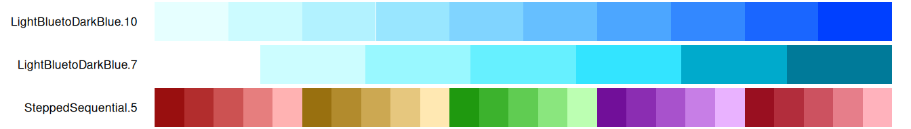
And a plain greyscale ramp, useful whenever color needs to be avoided or reserved for another variable:
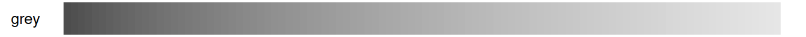
Diverging
Brewer’s diverging palettes:
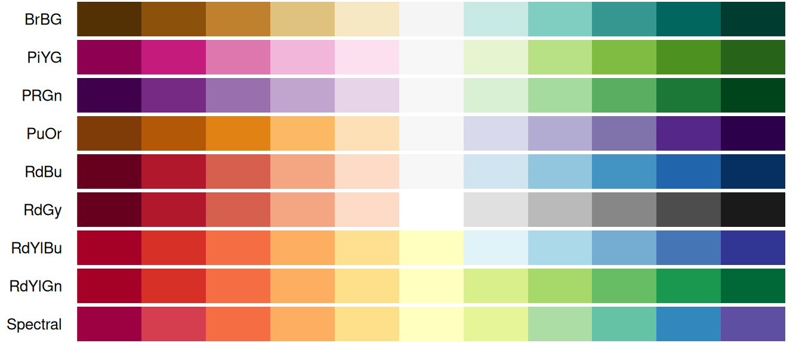
HCL’s diverging palettes:
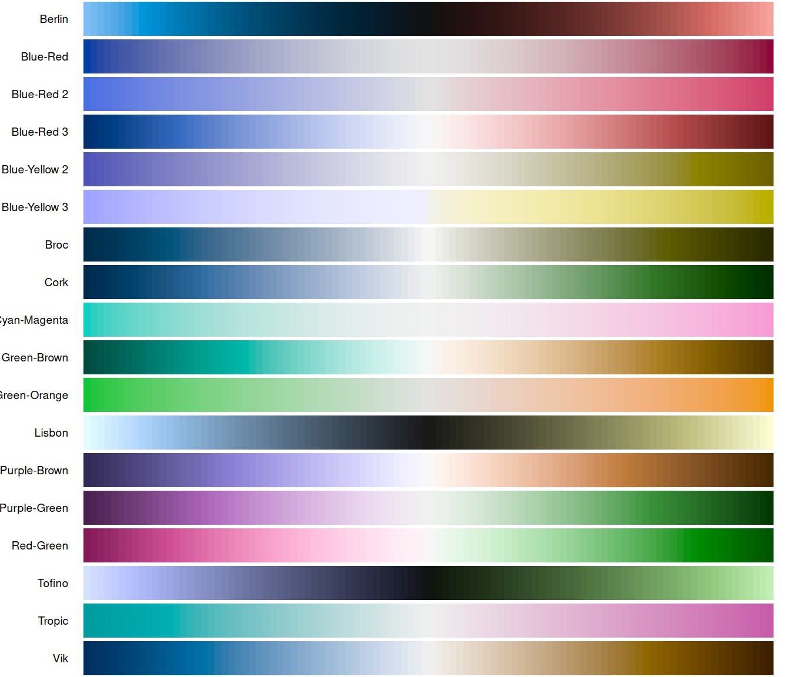
Dichromat’s color-blind-safe diverging palettes:
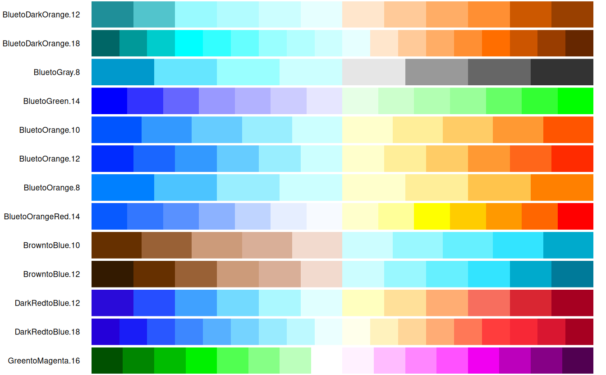